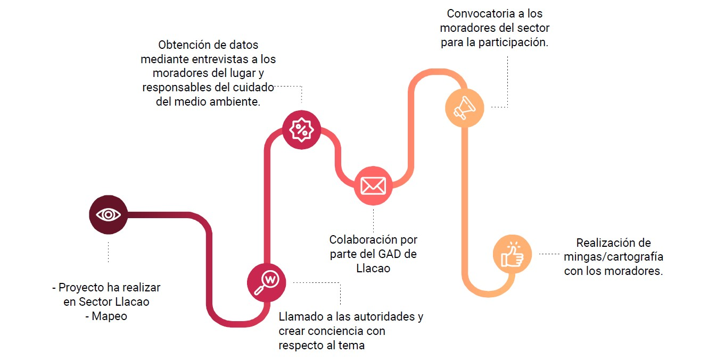

Tiene que ver con: Iniciativas Sociales - Ideas Innovadoras - Emociones Cuidados
Ayuda a: Aplicar innovación - Comunicar iniciativa ciudadana - Utilizar la cartografía

Funciona si: Facilita la difusión - Compone una base de datos - Documenta y fomenta encuentros
